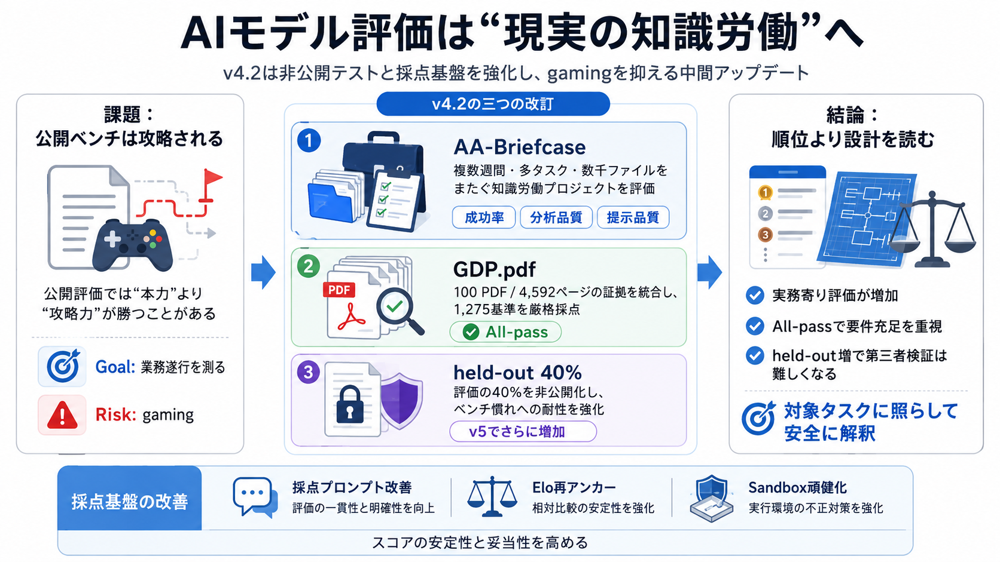

02 / 12
Artificial Analysis Intelligence Index
v4.2 / v5へ
更新
要点
AIモデルを「現実の知識労働」に近い形で比較し、攻略（gaming）を抑えるために、非公開テスト比率と採点基盤を強化した中間アップデートです。
対象：Intelligence Index v4.2（2026-09-04）
03 / 12
PROBLEM
なぜ“現実寄り”が必要？
Indexの
二面性
ベンチマークは、文章生成だけでなく「複雑資料を読んで結論」「複数作業を連携して成果」まで測る設計です。一方で、公開評価はベンチ慣れで“本力”より“攻略力”が勝ちやすくなります。
Goal
知能を“業務遂行”に寄せて測る
Risk
公開テストで gaming が起きる
04 / 12
CORE
v4.2の中心
三つの
改訂
v4.2は①エージェント的評価の追加、②専門文書推論の厳格化、③非公開テストの大幅強化、そして採点基盤の改善を組み合わせています。
①
AA-Briefcase（知識労働プロジェクト）
②
GDP.pdf（専門文書推論を厳格採点）
③
held-out 40%（gaming耐性を強化）
05 / 12
AA-Briefcase
知識労働の実務
AA-Briefcase
追加
単発QAではなく、複数週間・多タスク・数千のソースファイルをまたぐ「業務プロジェクト」を想定した評価です。
Workload
関連タスク多数 / 数千ファイル
Scoring
タスク成功・分析品質・提示品質
狙い：流暢さではなく、要件充足と成果物の妥当性を問う
06 / 12
GDP.pdf
専門文書の統合
厳密な
All-pass
GDP.pdfは100のPDFに分散した証拠を統合し、1,275の専門家基準をすべて満たした場合のみAll-pass Rateが与えられる設計です。
Evidence
4,592ページ / 100 PDF
Criteria
1,275の原子的基準（全達成前提）
効果：部分的に合っていても高得点になりにくい可能性
07 / 12
HELD-OUT
gamingへの対抗
“公開”を
減らす
評価の40%を非公開held-outテストに振り、ベンチーク側の適応（gaming）を抑えます。v5ではさらに増やす方針です。
Held-out
評価の40%（v4.2）
Direction
v5で増加（より攻略しにくく）
例：AA-Briefcase / AA-Omniscience / CritPt などがheld-outに含まれるとされる
08 / 12
SCORING
採点の頑健化
ブレを
減らす
採点プロンプトや誤り・曖昧性の修正、Elo尺度の再アンカー、サンドボックス頑健化などで、スコアの安定性と妥当性を高める狙いが示されています。
Prompt
採点プロンプト改善
Elo
再アンカー
Sandbox
頑健化
狙い：評価“手続き”の再現性も競争要因にする
09 / 12
RANKING
上位の傾向
Claude / GPT
中心
ランキング上位はAnthropicとOpenAIが中心で、Claude Fable 5.1やGPT-6 Astraが上位に位置します。
Models
Claude Fable 5.1 / GPT-6 Astra（上位）
Notable
GPT-6 Astra：トークン効率が近傍で優位
AA-Briefcase（エージェント評価）とGDP.pdf（文書推論）でも強さが報告
10 / 12
TAKEAWAY
読み解き方
“順位”より
設計
v4.2は現実適合性と頑健性を上げる方向性が強い一方、非公開テスト増加で第三者検証のしにくさも増えます。
Practical
実務寄り（AA-Briefcase / GDP.pdf）
Risk
held-out増で監査難度↑
Quality
All-pass / 採点基盤改善で要件重視
結論：指標の性格変化を前提に、対象タスクに照らして解釈するのが安全
11 / 12
REFERENCES
参照の核
Index
要旨
本デッキは、提示されたv4.2告知の記述（AA-Briefcase / GDP.pdf / held-out比率 / 採点インフラ改善 / 上位傾向）を要約し、読みやすく再構成したものです。
Core terms
held-out（非公開テスト） / gaming（攻略） / Elo / sandbox
Key metrics
held-out 40% / GDP.pdf：100 PDF・4,592ページ・1,275基準
日本語補助：Intelligence Index（知能指数） / Agentic work（エージェント的作業）
REFERENCES
12 / 12
References
No references found